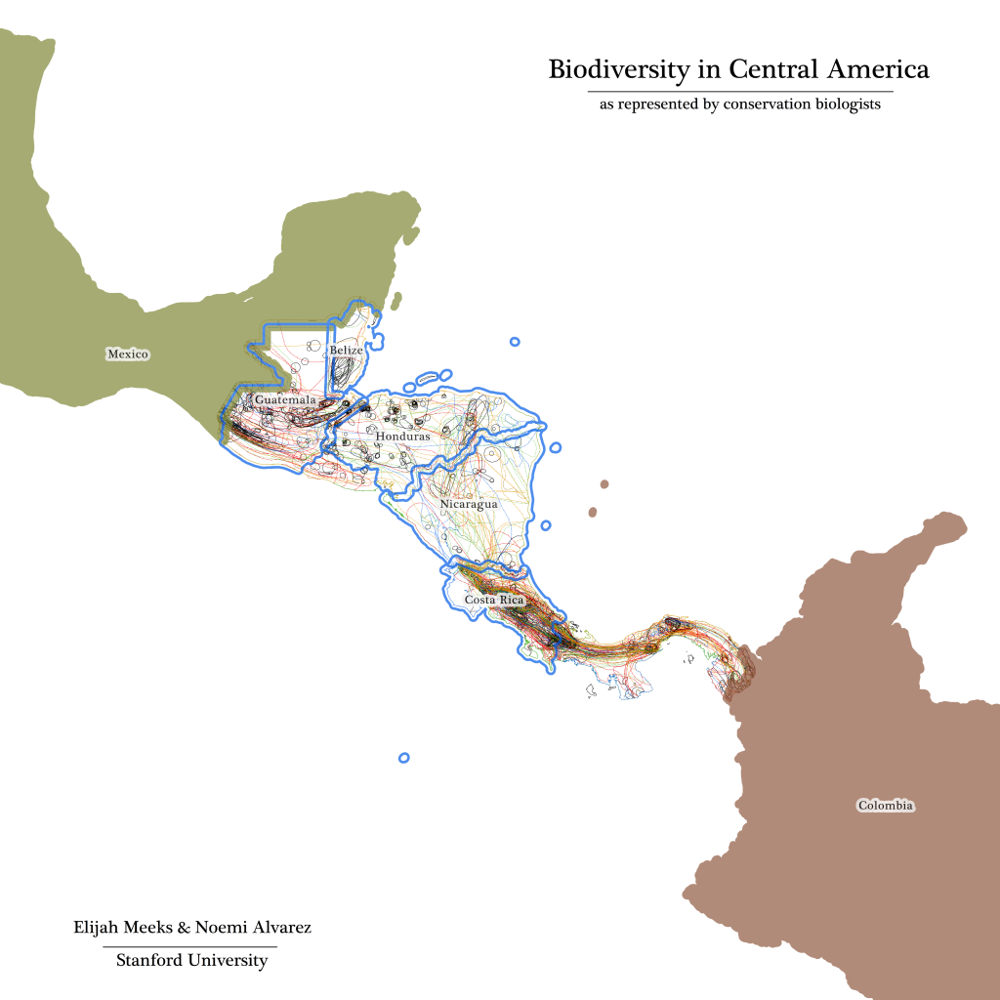

Border colors correspond to polygon perimeters ranging from black (for the smallest polygons) to red to orange to green to blue for the longest perimeter polygons.
This is a map of species ranges from the IUCN Red List store of spatial data–specifically amphibians in Central America. But this isn’t supposed to be a map of species range or biodiversity. Rather, it’s meant to be a map of the attention paid to Central America by conservation science as an entity and as opposed to conservation scientists as a group. Emergent entities, such as states or movements, are more than just corporate collections of individuals, they also consist of bodies of work, methods and practices. Spatial data, and especially modern spatial data as fostered by ubiquitous Geographic Information Systems (GIS), provides one way of examining such emergent entities. Displayed on this map are the variety of methods and practices for delineating species range, many of which are mediated by the systems used to track species as well as the systems used to analyze such data. Further, this visualization foregrounds the influence of political stability, geographic accessibility and cultural barriers as they affect the creation of research to support concepts of biodiversity.
The map itself is riddled with aesthetic decisions to better highlight the phenomena in question, some of which may seem to actually constrain that process. Political borders have been exaggerated or removed; cities are missing; the areas themselves are colored not based on threat status or taxonomy but rather on the length of the shape’s perimeter; most urgently, there is no legend, with the unstated claim being that all of these previous visual decisions are readily apparent upon examination. It was built with the help of Noemi Alvarez, who works as a GIS Analyst here at Stanford with a focus on working with spatial data as cultural, historical, social and political artifacts, rather than unproblematic representations of truth.